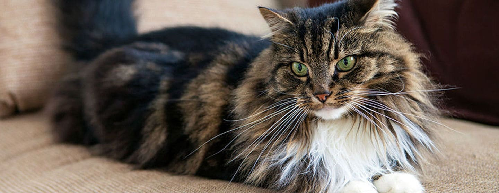
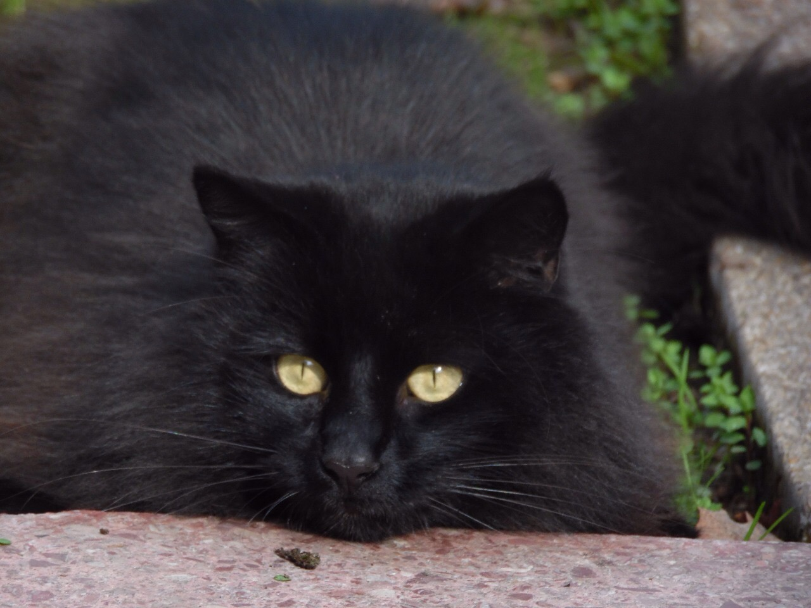
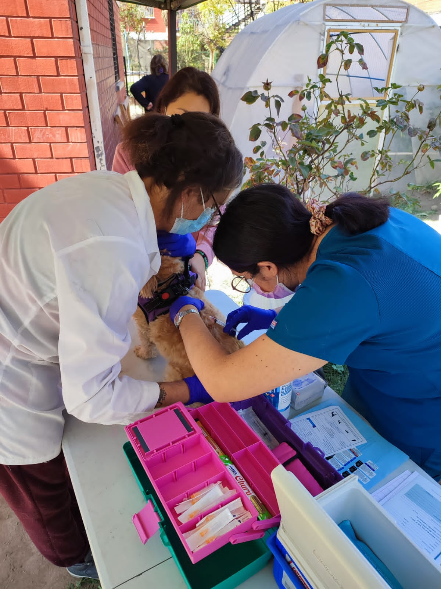

Adopta un minino
Somos una organizacion sin fines de lucro para ayudar a gatos que necesitan un hogar y nuestra ayuda, nos preocupamos de que tengan seguridad, alimentación, una buena salud y un lugar agradable donde habitar.
Nuestra Misión
Llevar a cada gato a un hogar seguro, de buen entorno, mientras no tengan dicho hogar, poder darles un buen lugar en el cual vivir seguros.
Nuestras redes
A base de campañas solidarias y eventos de mascotas es como financiamos nuestro mantenimiento a los gatos que tenemos acogidos por un tiempo.

Contamos con nuestra propia veterinaria
Constanza es quien se encarga de que los gatos acogidos esten en un buen estado de salud, con sus vacunas y desparasitaciones al día, y así, sus nuevos tutores los adoptarán sanos.
